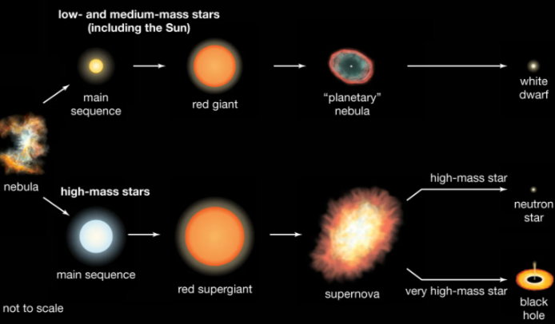

Star Sizes and Masses
Mass: The mass of a star determines its life cycle. More massive stars have higher temperatures and luminosities, but shorter lifespans. For example, an O-type star can be hundreds of times more massive than the Sun, while a red dwarf might only have a fraction of the Sun’s mass.
Size: Stars vary greatly in size. The smallest stars (red dwarfs) can be as small as 0.1 solar masses, while the largest stars (supergiants) can be several hundred times the Sun's size in radius.
The Life Cycle of a Star
Main Sequence: The majority of a star's life is spent in the main sequence phase, where it fuses hydrogen into helium in its core. This is the phase our Sun is currently in.
Red Giant/Supergiant: Once a star exhausts its hydrogen, it expands into a red giant or supergiant. During this phase, the core contracts while the outer layers expand and cool.
Fusion of Heavier Elements: In more massive stars, the core may start fusing heavier elements like carbon, oxygen, and even iron.
End of Life
Low to Medium Mass Stars (like the Sun): These stars shed their outer layers and form a planetary nebula, leaving behind a dense, hot white dwarf. Over billions of years, the white dwarf will cool and fade.
Massive Stars: Stars with more than about 8 times the mass of the Sun end their lives in a supernova—a catastrophic explosion that can briefly outshine an entire galaxy. The remnants can form a neutron star (if the core is between about 1.4 and 3 solar masses) or a black hole (if the core is more massive).
